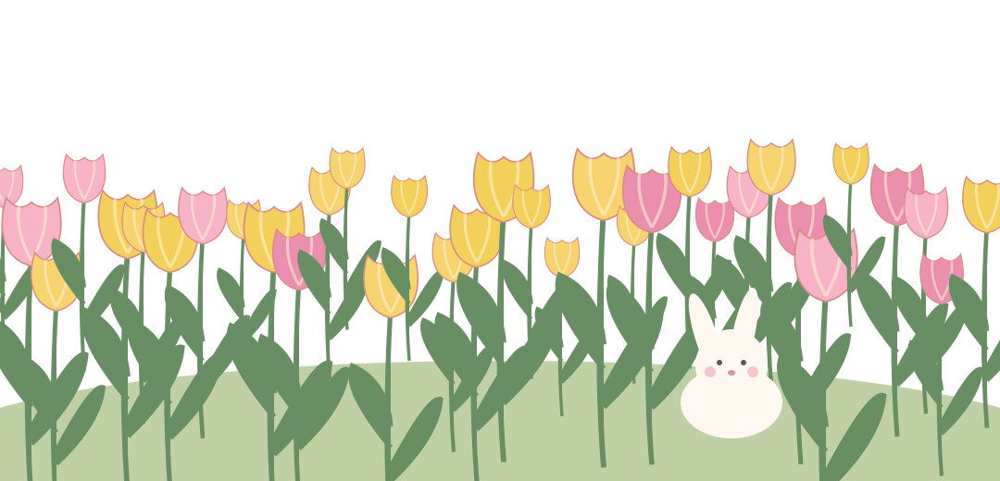

A LITTLE SOMETHING, JUST FOR YOU
♡
You make my world bloom.
A little garden of happiness, made for my favorite person.
Come wander with me ↓
A NOTE FROM MY HEART
Life is sweeter
with you in it.
✿ ♡ ✿
My love,
Every day with you feels like finding a little more sunshine in the world. You have this beautiful way of making even the simplest moments feel special.
I hope you always know how deeply you are appreciated. Your heart, your smile, your wonderfully unique way of being — I treasure all of it.
Here’s to more laughter, more adventures, and a thousand little moments together. I’m so grateful for you.
Always yours ♡